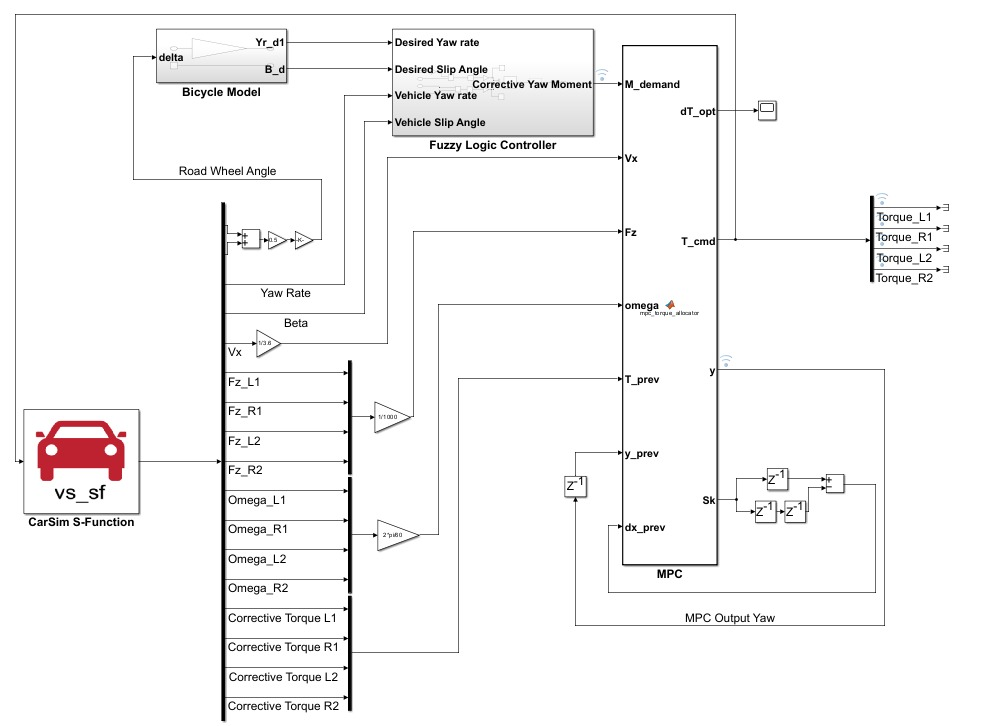
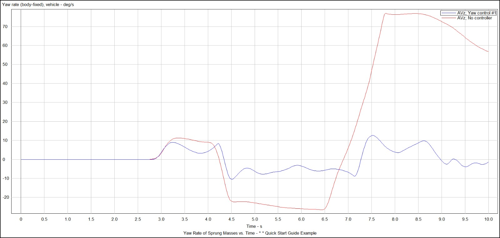
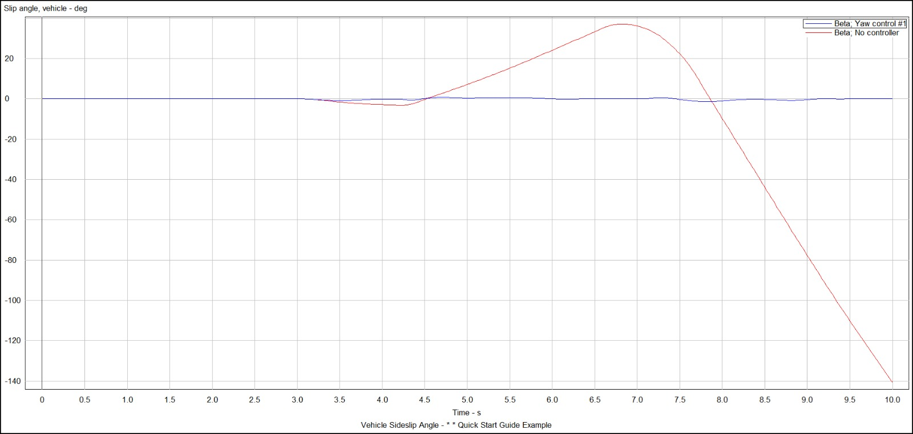
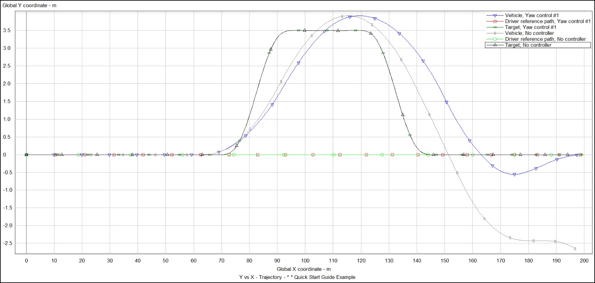
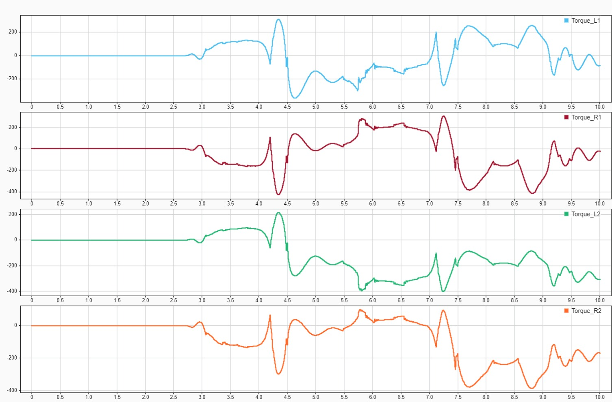
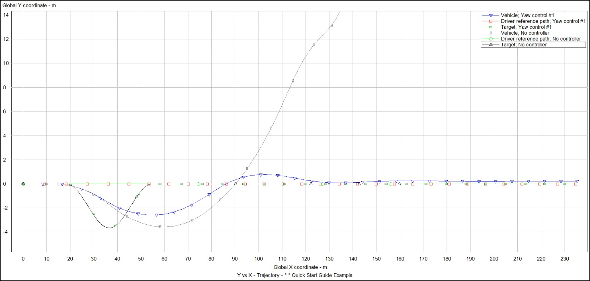
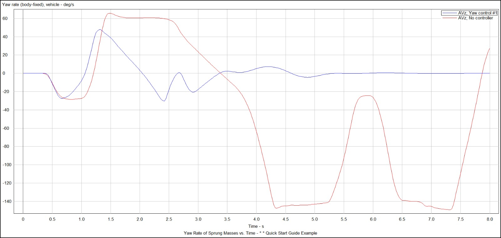
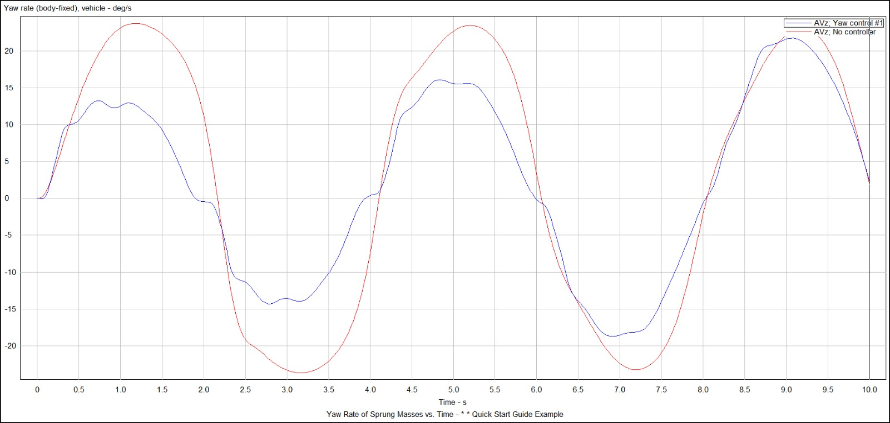
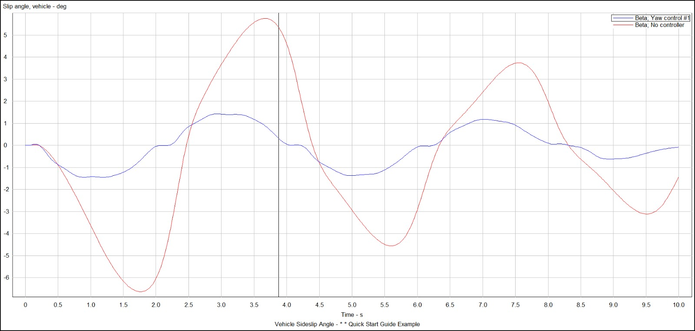

Project overview
A hierarchical controller combined an upper-level Mamdani fuzzy controller with a constrained model predictive torque allocator for a four-wheel independently driven electric vehicle. The controller was evaluated against an uncontrolled baseline in MATLAB/Simulink–CarSim co-simulation.
Control architecture
A bicycle reference model defines desired yaw behavior. The fuzzy controller translates yaw-rate and sideslip errors into corrective yaw-moment demand. The MPC distributes that demand among the four wheels using a prediction model based on wheel-slip dynamics.
{kind=link}

| Controller parameter | Configuration |
|---|---|
| Sampling interval | 25 ms |
| Prediction / control horizons | 10 / 3 steps |
| Configured wheel-torque limits | ±500 N·m |
| Torque-increment limit | 200 N·m per step |
| Configured slip-ratio bounds | −0.2 to +0.2 |
The quadratic objective balances yaw-moment tracking against torque variation. The implementation uses the Hildreth dual method to solve the constrained optimization problem.
Low-friction lane change
The low-adhesion double lane change used an 80 km/h entry speed and road friction coefficient μ = 0.30. Peak yaw-rate magnitude decreased from approximately 77°/s to 13°/s, a reduction of about 83% in this simulation.
{kind=link}

{kind=link}

{kind=link}

{kind=link}

Additional test cases
| Maneuver | Speed | Road friction μ |
|---|---|---|
| Tight double lane change | 120 km/h entry | 0.85 |
| Low-friction double lane change | 80 km/h entry | 0.30 |
| Sinusoidal steering | 100 km/h | 0.85 |
{kind=link}

{kind=link}

{kind=link}

{kind=link}

Engineering findings
The simulations show how constrained wheel-torque allocation can improve lateral stability. The high-demand cases also expose limits in available control authority and tracking performance. These results support tuning and model development within the tested simulation conditions.
CarSim’s internal driver generates steering for the lane-change tests, so the controlled and uncontrolled steering histories can differ.